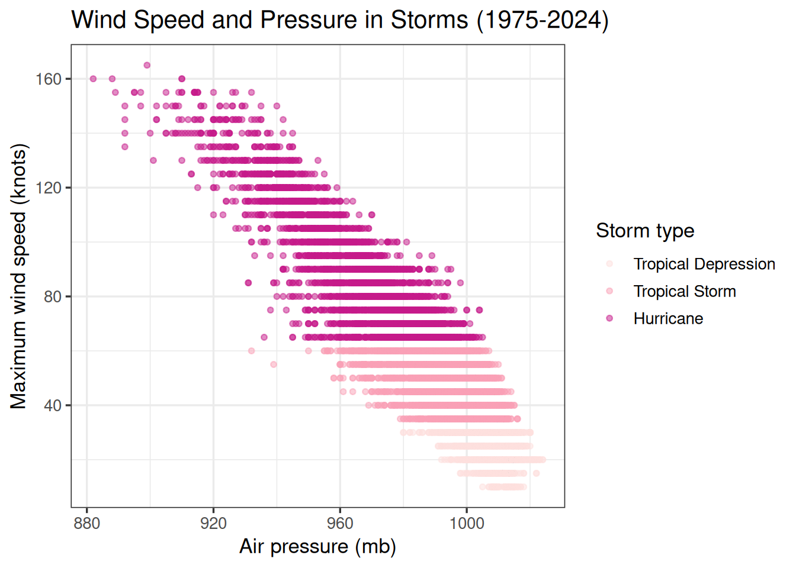
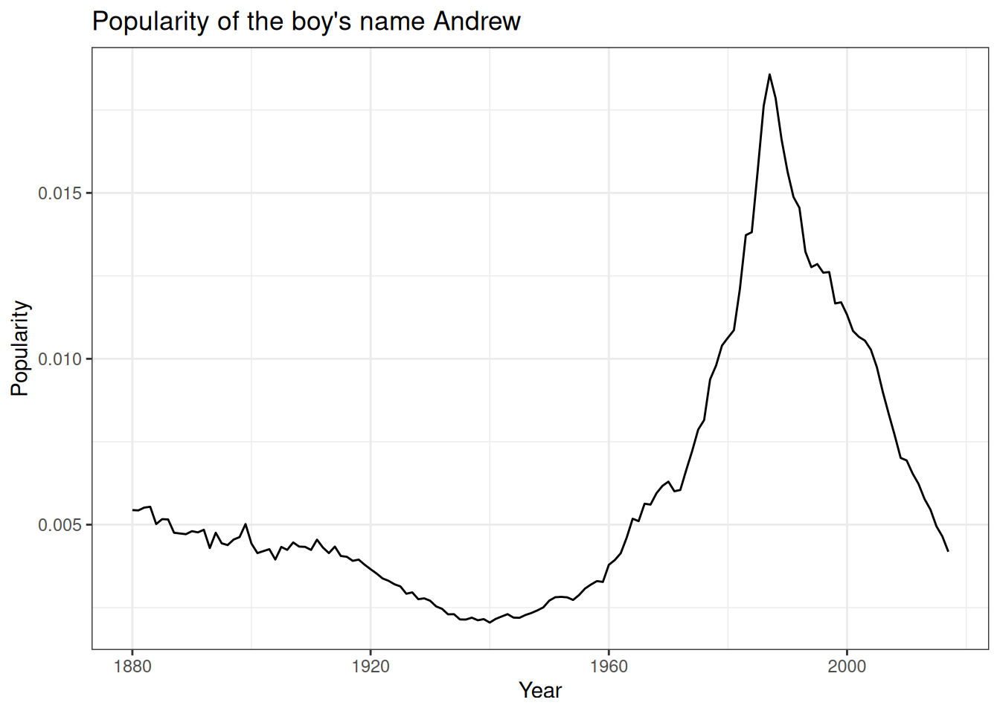

tuition_cost <- readr::read_csv('https://raw.githubusercontent.com/rfordatascience/tidytuesday/main/data/2020/2020-03-10/tuition_cost.csv')4
EDA
Exploratory
Your task is to understand the basic structure of a new data set from 2020 related to tuition costs at colleges and universities across the country. It is stored as a csv on github that can be read into your R session (or a Quarto document) using:
For each of the following, please answer the question in full sentences, provide the code that you used, along with the plot (or a sketch of it).
- What are the dimensions of the data set? What is the unit of observation? What is the nature of the variables (what they are, their units or levels, and their type)?
- Is there any missing data? If so, where?
- What is the distribution of the cost of in-state tuition? Answer with summary statistics, a plot, and a written description of its shape.
- The
typevariable is intended to sort institutions into three types: public, private, and for-profit. Evaluate whether that is true of this data set and let it inform your answer to the next question.
- How does the distribution of in-state tuition differ between the types of institutions? Answer with a plot and a written description of how the distributions compare.
- Which are the three most expensive institutions? The three least expensive institutions?
- Create one more visualization of at least two variables that you’re curious about. Describe the structure that you see with a written description. Then write down one new question that your plot raises, one that you would need more digging (or more data) to answer.
Explanatory
Each of the plots below is meant to tell a particular story to a particular audience. As you craft them, think carefully about the labels, themes, aesthetic settings, and the manner in which they facilitate comparisons.
Return to the tuition data and make two explanatory plots from it, each telling a different story. For each plot, before you write any code, write down a plan like the ones we made for the EV data in class:
- Audience: who is this plot for?
- Story: what is the one thing you want them to take away?
- Strategy: what will you do to the plot to make that story easy to see?
Then provide the code alongside the plot (or a sketch of it). The two plots should make different comparisons easy, so draw on the tools from class: labels, limits and baselines, non-linear scales, reordering categories with
fct_reorder()orfct_infreq(), themes, and setting aesthetics.
- Provide the code that will create this plot from the
stormsdata set inside thedplyrpackage. A few notes:- Each dot is a single observation of a storm, not a whole storm: storms are measured every six hours over their lifetimes.
- You will need to create a new column indicating storm type based on wind speed. For that you’ll need to learn how that determination is made and then add it to the data frame. The
case_when()function is a helpful shortcut similar toifelse(). - The color palette belongs to a set of palettes called ColorBrewer. You can read more about them here: https://ggplot2.tidyverse.org/reference/scale_brewer.html.

- Name at least two changes you’d make to the storms plot to make it easier to read. For each, say which comparison it would make easier to see.
- Remake your storms plot using a very specific visual theme: the botanical paintings of the US Department of Agriculture. They have been wrapped up into a ggplot2 theme inside the
ggpomologicalpackage: https://github.com/gadenbuie/ggpomological. Read about how to use the package and write below the additional layers that you added to your plot above (for a challenge, see if you can get the handwriting font to show up). If you also wanted to tweak your plot withtheme(), where in your code would that layer need to go, and why?
The
presentdata frame stores data from the US Census about the number of boys and girls born each year between 1940 and 2013. It is stored in thestat20datapackage, which can be installed from GitHub using thedevtoolspackage.# install.packages("devtools") # devtools::install_github("https://github.com/stat20/stat20data") library(stat20data) slice(present, 1:5)Make two plots of the trend over time in the proportion of births that are girls, each with a horizontal line at a baseline of .5 (see
geom_hline()).- Plot A: put the annual variability into context by ensuring the viewer can see the full range of possible values that the proportion could take.
- Plot B: let the y-axis zoom in on the range of the data.
For each plot, write one sentence giving the story it tells and an audience it would suit.
(Challenge) Some of the most effective plots on the web don’t come from R or Python, but from dedicated visualization libraries written in JavaScript. That is the case for the EV registration plot made by the Department of Energy (https://afdc.energy.gov/data/10962), which uses a library called Highcharts.
While you could craft the plot directly using JavaScript, a member of the R community has written a package that allows you to make them directly from R: you write R code, which the package turns into JavaScript, which Highcharts then renders as a plot. Read how to use the package on its documentation site: https://github.com/jbkunst/highcharter/.
Your task is to recreate the EV Highcharts plot exactly using the data found in an excel spreadsheet on the DoE website. You can export the excel spreadsheet as a csv file, as we did in class, or you can experiment with the
readxlpackage to read it into R directly.
Joins
# A tibble: 4 × 3
student_id name major
<dbl> <chr> <chr>
1 1 Ada Stat
2 2 Bruno DS
3 3 Chandra Stat
4 4 Diego Econ # A tibble: 4 × 2
student_id quiz_score
<dbl> <dbl>
1 2 88
2 3 94
3 4 77
4 5 91These data sets illustrate a roster of students registered for a particular lab section (roster) and the record of grades on a quiz (grades). For each of the following, write appropriate the dplyr join command and sketch the resulting data frame that contains those records.
- All registered students who took the quiz.
- The quiz scores for all registered students.
- The names and majors or all students who took the quiz.
- All records for students either registered for the section or who took the quiz or both.
- The name and major of the registered students who didn’t take the quiz.
The following questions return to the storms data found in the dplyr package.
- Calculate the maximum wind speed of each storm, then attach that column of data to the original
stormsdata frame.
- Create a small data frame that you can then use to filter the
stormsdata so that it only retains records of storms that are “Hurricanes”, “Tropical Storms”, and “Tropical Depressions”. (note: don’t usefilter!)
- Create a small data frame that you can use to add on a new column to
stormscalledtypethat has levels of “Hurricanes”, “Tropical Storms”, and “Tropical Depressions” for storms with thatstatusand “Other” for all other storms. (note: don’t usemutate()!)
- Remake the state-by-state EV registration chart but instead of plotting the distribution of registrations, display, for every state, either: a) the proportion of vehicle registrations that are EV b) the ratio of EV registrations to residents. To do this you will need to track down additional data online and join it with the EV data registration data.
- In the space below, sketch out four Venn diagrams, one for each of the mutating joins. Each diagram should have two circles representing tables X and Y, showing some overlap. Shade in the parts of the diagram where those rows exist in the joined data frame.
…and Pivots
The tidyr package contains the following data set called fish_encounters collected by aquatic scientist (and Cal grad!) Myfanwy Johnson.
library(tidyr)
fish_encounters# A tibble: 114 × 3
fish station seen
<fct> <fct> <int>
1 4842 Release 1
2 4842 I80_1 1
3 4842 Lisbon 1
4 4842 Rstr 1
5 4842 Base_TD 1
6 4842 BCE 1
7 4842 BCW 1
8 4842 BCE2 1
9 4842 BCW2 1
10 4842 MAE 1
# ℹ 104 more rows- What is the unit of observation? What values are found in the
seencolumn? What do they indicate? What values are missing? (see?fish_encounters)
- Some forms of analysis require a format where every row is a unique fish and every column is a monitoring station. Write the code to perform this transformation and sketch the resulting data frame, illustrating the column names, the number of rows, and a sample of the values that are seen.
- R uses
NAto indicate a measurement that was intended to be taken but that is missing for whatever reason. In this case, that absence means that in fact the fish was not detected, so the value should really be a0. Revisit yourpivot_()command and add an additional argument to fill those values with0instead ofNA(see the help file for pivot).
- Reshape your new data frame back to the shape of the original
fish_encounters. What are the dimensions and how does it compare to the original data frame?
The package also contains a data frame called billboard, which records the billboard rankings of different songs in 2000.
library(tidyr)
billboard# A tibble: 317 × 79
artist track date.entered wk1 wk2 wk3 wk4 wk5 wk6 wk7 wk8
<chr> <chr> <date> <dbl> <dbl> <dbl> <dbl> <dbl> <dbl> <dbl> <dbl>
1 2 Pac Baby… 2000-02-26 87 82 72 77 87 94 99 NA
2 2Ge+her The … 2000-09-02 91 87 92 NA NA NA NA NA
3 3 Doors D… Kryp… 2000-04-08 81 70 68 67 66 57 54 53
4 3 Doors D… Loser 2000-10-21 76 76 72 69 67 65 55 59
5 504 Boyz Wobb… 2000-04-15 57 34 25 17 17 31 36 49
6 98^0 Give… 2000-08-19 51 39 34 26 26 19 2 2
7 A*Teens Danc… 2000-07-08 97 97 96 95 100 NA NA NA
8 Aaliyah I Do… 2000-01-29 84 62 51 41 38 35 35 38
9 Aaliyah Try … 2000-03-18 59 53 38 28 21 18 16 14
10 Adams, Yo… Open… 2000-08-26 76 76 74 69 68 67 61 58
# ℹ 307 more rows
# ℹ 68 more variables: wk9 <dbl>, wk10 <dbl>, wk11 <dbl>, wk12 <dbl>,
# wk13 <dbl>, wk14 <dbl>, wk15 <dbl>, wk16 <dbl>, wk17 <dbl>, wk18 <dbl>,
# wk19 <dbl>, wk20 <dbl>, wk21 <dbl>, wk22 <dbl>, wk23 <dbl>, wk24 <dbl>,
# wk25 <dbl>, wk26 <dbl>, wk27 <dbl>, wk28 <dbl>, wk29 <dbl>, wk30 <dbl>,
# wk31 <dbl>, wk32 <dbl>, wk33 <dbl>, wk34 <dbl>, wk35 <dbl>, wk36 <dbl>,
# wk37 <dbl>, wk38 <dbl>, wk39 <dbl>, wk40 <dbl>, wk41 <dbl>, wk42 <dbl>, …- What are the dimensions of the data frame? What are the values stored in the
wkcolumns? Why does it havewk76column? Weren’t there only 52 weeks in 2000? (see?billboard)
- This data frame possess a strange quality: the week data is stored across column names instead of in the values of a column called
week. Pivotbillboardto create this alternative (more useful) representation1. Make a sketch of the data frame, indicate its dimensions and the columns that it contains.
- Remove all rows from the new data frame that are unranked in a given week. This can either be done using
drop_na()or more elegantly back in yourpivot_()function by adding another argument that takes care of it (see the help file for ideas). Provide the code that you used here.
- Using this reshaped data frame, make a line plot2 that shows how each track moves through ranks from one week to the next. Provide the code used to construct your plot as well as a sketch of the result.
To really polish your graphic:
- Add transparency to the lines to prevent overplotting
- Add useful labels
- Modify the theme if you wish
- Challenge: Invert the y-axis so that the top ranks (lowest numbers) are at the top of the y-axis.
- Challenge: Similar to the COVID plot seen in lecture, pick one line to highlight in a bright color and color the rest of the lines a more subtle color. This could be your favorite track, an example of a “slow burn” track that took a long time to reach the top, a “flash in the pan” track that gained fast and faded fast, or the track that stayed at number 1 for the longest.
Strings I
The following questions concern the R object called fruit that is stored in the stringr package.
library(stringr)
head(fruit)[1] "apple" "apricot" "avocado" "banana" "bell pepper"
[6] "bilberry" - What data structure is
fruitand what is its length?
- Which fruits have the longest and shortest names?
- Replace the entry
"currant"with"red currant".
- Form a single string that starts with
"My favorite fruits are"and then lists all of the fruits, separated by a comma and a space. The end of the list should have"and"before the last fruit and end with a period.
- Form a string like the following but with another fruit and emoji3 of your choice. Note the fruit name should come directly from
fruit.
[1] "🍋 lemon 🍋"- Print all of the fruit names containing
"berry".
- How many fruit names contain the letter
"o"?
- Which fruit names contain the most
"o"s?4
- How many fruits feature two
"a"s separated by one other character?
- Create the string below and print it with
str_view(). Then print it again in all capital letters.
[1] │ The sign said "Fresh fruit!"
│ and we believed it.- Abbreviate each fruit name to its first three letters. Which fruits have an abbreviation with two vowels in a row? Use a character class and a quantifier in your pattern.
Strings II
These questions deal with the babynames data set inside the package of the same name. Read about the data set with ?babynames.
# install.packages("babynames")
library(babynames)
babynames# A tibble: 1,924,665 × 5
year sex name n prop
<dbl> <chr> <chr> <int> <dbl>
1 1880 F Mary 7065 0.0724
2 1880 F Anna 2604 0.0267
3 1880 F Emma 2003 0.0205
4 1880 F Elizabeth 1939 0.0199
5 1880 F Minnie 1746 0.0179
6 1880 F Margaret 1578 0.0162
7 1880 F Ida 1472 0.0151
8 1880 F Alice 1414 0.0145
9 1880 F Bertha 1320 0.0135
10 1880 F Sarah 1288 0.0132
# ℹ 1,924,655 more rows- What does every row refer to, i.e. what is the unit of observation? What time range is covered by this data? How is
propcalculated (what is the numerator and denominator)?
- In 2010, what proportion of boys names ended with a vowel? How about girls names? How does those proportions differ when calculated in 1910?
- Narrow down the data frame to the rows with names that end in a diminutive (e.g. “Joey” and “Juanita”). Do some research to gather a set of diminutives used in languages found in American baby names.
- How many distinct names rhyme with “Aiden”?
- Create a plot like the following but for your name.

- Create a plot that shows the relative frequency of a name shared by a historic figure over time (e.g. “Barack”).
- Optional Challenge: For each year since 2000, which names have been the most gender neutral?
- Optional Challenge: Plot the proportion of diminutive names over time.
- R has a built in palette of colors that you can access with
colors(). Note that many of the colors in that palette have numbered variants that are different darknesses. How many colors are in this palette after removing the numbered variants of a color?
The following questions deal with the chorus of the song, “Golden”, by Huntrix. Be sure it copies into R as a string that captures the new line characters. Provide the code to programmatically answer each question. There are many ways to answer these questions but str_split() might be helpful.
x <- "We're goin' up, up, up, it's our moment
You know together we're glowing
Gonna be, gonna be golden
Oh, up, up, up, with our voices
\uc601\uc6d0\ud788 \uae68\uc9c8 \uc218 \uc5c6\ub294
Gonna be, gonna be golden"- How many lines are in the chorus?
- How many times is the word
"up"used in the chorus?
- How many distinct four letter words are used?
- Replace each of the contractions with the expanded english equivalent.
- What is the first word of each line?
- How many words are in each line?
- Provide a new string that writes the Korean word for “Golden” using the appropriate Unicode characters.
Dates and Times I
The next few questions reference the moment that the ball fully dropped in Times Square in New York City at the first moment of the new year in 2000. The corresponding UNIX time was 946684800. Please form a vector to captures this point in time in several different ways. Remember you may need to look at function help files to learn more about how the functions taught in class work.
- Using baseR and the Unix epoch.
- Using baseR and a string that expresses the timepoint in a format similar to
"2026-10-14 13:00:00".
- Using baseR and a string that expresses the timepoint in a format similar to
"Oct 14, 2026 1:00 pm".
- Using lubridate and a string that expresses the timepoint in a format similar to
"2026-10-14 13:00:00".
- Using lubridate and a string that expresses the timepoint in a format similar to
"Oct 14, 2026 1:00 pm".
- What is the type of the objects created by the different commands used above?
Each of the following questions should be answered with an R command.
- What day of the week were you born on?
- The first day of classes this semester fell on which week of the current year?
- In which year will Unix time cross the 2 trillion second mark?
- What is the precise date and time at which that milestone will occur?
Dates and Times II
Using the notions of durations, periods, and timezones from lubridate, provide the code and output to answer the following questions.
- How old are you? Answer as a duration.
- How old will you be in one month? Answer both using durations and periods.
- What time is it now? Answer using the
now()function in lubridate and answer in HH:MM:SS and provide the timezone.
- What is the current time in UTC (the time in London during winter)?
- Now imagine you call your friend right now in Delhi, India and ask them to do the same on their phone. What will they say? (in HH:MM:SS with timezone).
These exercises will be easiest done iteratively in R. You can copy your answers back here or produce your problem set document using Quarto directly. The data set at hand is called flights inside the nycflights package.
library(dplyr)
library(lubridate) # this is also in library(tidyverse)
library(nycflights13) # install this if you don't have it
flights # take a glimpse at the data frame# A tibble: 336,776 × 19
year month day dep_time sched_dep_time dep_delay arr_time sched_arr_time
<int> <int> <int> <int> <int> <dbl> <int> <int>
1 2013 1 1 517 515 2 830 819
2 2013 1 1 533 529 4 850 830
3 2013 1 1 542 540 2 923 850
4 2013 1 1 544 545 -1 1004 1022
5 2013 1 1 554 600 -6 812 837
6 2013 1 1 554 558 -4 740 728
7 2013 1 1 555 600 -5 913 854
8 2013 1 1 557 600 -3 709 723
9 2013 1 1 557 600 -3 838 846
10 2013 1 1 558 600 -2 753 745
# ℹ 336,766 more rows
# ℹ 11 more variables: arr_delay <dbl>, carrier <chr>, flight <int>,
# tailnum <chr>, origin <chr>, dest <chr>, air_time <dbl>, distance <dbl>,
# hour <dbl>, minute <dbl>, time_hour <dttm>- Start by reading the documention for the data frame. What is the unit of observation? What time span and geography is covered by this data? Which time zones are any time columns recorded in?
Using
year,month,day, and the integer clock timessched_dep_timeanddep_time(HHMM)5, add two more variables to your data frame:sched_dep_ts: the scheduled departure timestamp.dep_ts: the actual wheels-off timestamp.
Both must be POSIXct in the “America/New_York” time zone.
- Calculate the actual wheels-off timestamp in two additional ways and store them as additional variables in your data frame:
dep_ts_dur: add tosched_dep_tsthe recorded time span of the departure delay as a duration.dep_ts_per: add tosched_dep_tsthe recorded time span of the departure delay as a period.
In general do the different approaches align? How about if you look at the precise edge of a switch to/from Daylight Savings Time?
- Challenge: Construct scheduled and realized arrival timestamps using only columns in flights. Build
sched_arr_tsfromyear,month,day, andsched_arr_time(HHMM) in “America/New_York”.
For red-eyes that arrive after midnight local time, sched_arr_time may be smaller than sched_dep_time. Correct the date by adding a day to sched_arr_ts when needed.
Do the analogous construction for actual arr_ts from arr_time.
Then compute:
sched_block <- as.duration(sched_arr_ts - sched_dep_ts)actual_block <- as.duration(arr_ts - dep_ts)
Report the median difference actual_block - sched_block in minutes.
Footnotes
Hint: there is a handy shortcut that saves you from typing all of the column names:
starts_with()inside thetidyselectpackage↩︎Note that
geom_line()permits the use of agroupaesthetic mapping to make one line for each group.↩︎Each emoji is defined by an 8 digit code called Unicode. See https://r4ds.hadley.nz/strings.html#other-special-characters.↩︎
Write a pattern that matches only names with at least two
"o"s, using the wildcard and a quantifier. Then extend it to three, four, and so on until nothing matches.↩︎You can parse these clock times using what you know about string manipulation or by using handy math operators
%/%and%%. Another hint: see the Circular Data example from the slides.↩︎